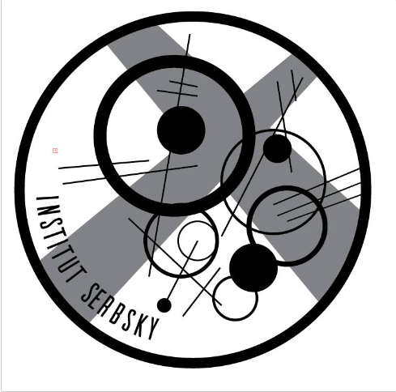

Work
Meet App - Progressive Web App with React
Within this project, I created a progressive web app using React and Google calendar API. This app displays data visualization about current events related to programming in different cities around the globe.
Link to Meet App See project on GitHub
See project on GitHub
BeBapp - The Pokédex
The purpose for this pokedex is to load an external API and display the content using modals generated by JS. The project is built using HTML, CSS and JavaScript. The pokedex will load the pokemon data from an external API. A list of pokemon will be displayed which will show pokemon details if clicked on.
See project on GitHubHello Chat
A chat app for mobile devices using React Native. The app will provide users with a chat interface and options to share images and their location.
See project on GitHubQuarantinoFlix - The movie web app
This project addresses the development of the client-side of the movie application QuarantinoFlix. The frontend will be build by using the React framework. This will interact with the REST API that has been previously defined in a preceding project. In the end, the whole application will follow the MERN tech stack.
Link to QuarantinoFlix App See project on GitHubMyFLix with Angular
In this project I used Angular to build the client-side for the QuarantinoFlix App based on its existing server-side code (REST API and database)
Link to MyFLix Angular App See project on GitHubInstitut Serbsky - the art collective website
Window website for our artist collective activities, events and exhibitions through the city of Berlin. First project from 2016, built with Wordpress CMS and the help of a professional programmer for designed from scratch entrance path. Domain hosted with OVH.
 Visit the Institut